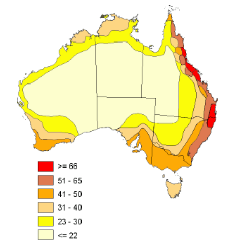
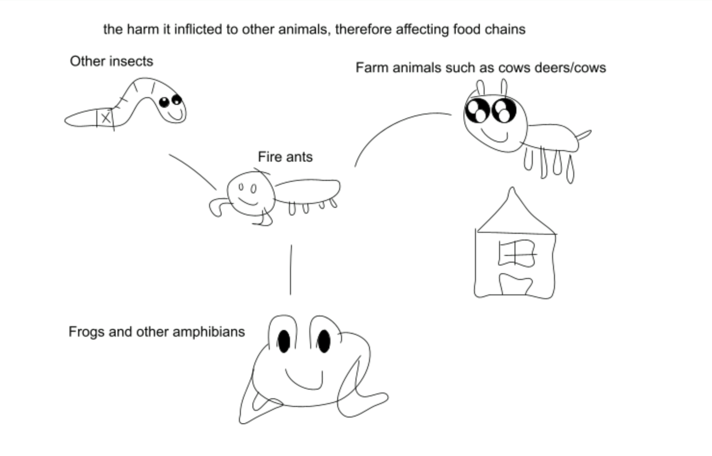

The accidental introduction of fire ants
In the year 2001, red fire ants were imported from the United States to the ports of Brisbane, Australia through the goods that were transported by ships. This is very harmful to the species around Australia as fire ants are known for having aggressive characteristics, and have abilities to reproduce to numerous amounts. Having that in mind, Australia had already spent over RM1.6 billion or $500 million dollars in an attempt to eradicate the invasion of fire ants. There are 2 types of fire ants that are imported such as the red fire ant and the black fire ant. As it is impossible to eradicate fire ants, countries such as Australia can only slow down the reproduction of the 2 species. Despite the high population of fire ants, they are sitting on the top of the food chain as they prey on all types of insects.
Effect on the food chain:
Feed insects, spiders, lizards, frogs, birds and mammals.
Could displace or eliminate some native species.
Eat and damage seeds, possibly causing major ecosystem changes over time.

This image shows us the fire ant feeding on a larva that is still developing in its early stages, causing this species of larva to reduce significantly.

This image shows Australia and the population of red fire ants
Red = not good √ (high population of fire ants - very dense)
Slightly yellow like a hydrated person’s pee = still not good but lowerpopulation

This image above shows the different types of animals fire ants cause harm to. It is because they can induce painful stings to these animals, and sometimes cause death. Therefore, their population will gradually decrease, and the prey of these animals will have nothing to feed on. Hence, affecting and causing the end to some of the food chains.
Feel free to enjoy these wonderful drawings - all copyright served © 1/10/2021